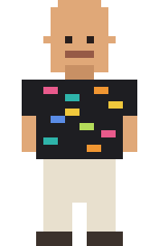
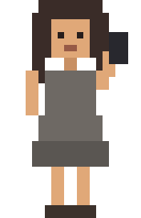
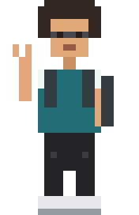
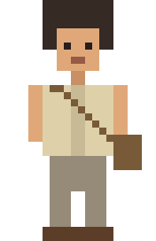

Craft Valley — クラフトバレー
Two visions of Japan's mountain craft heritage
和風
Japanese Traditional.Vermillion, washi & gold.
Simple
Pure & minimal.Content comes first.
craftvalley.jp | Toyama · Hida · Komatsu, Japan